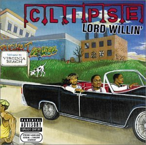
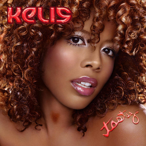
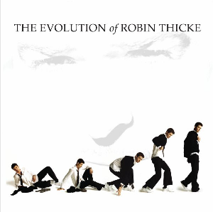

Lord Willin'
Lord Willin' is the debut album from Virginia hip-hop duo Clipse. Released on August 20, 2002 and sold 122,000 units in its first week of release.The album was certified gold by the RIAA on October 1, 2002.

Tasty
Tasty is the third studio album by American singer-songwriter Kelis, released on December 5, 2003 by Star Trak Entertainment and Arista Records.

The Evolution of Robin Thicke
The Evolution of Robin Thicke is the second studio album by American singer-songwriter Robin Thicke; it was released on October 3, 2006, by Star Trak Records.